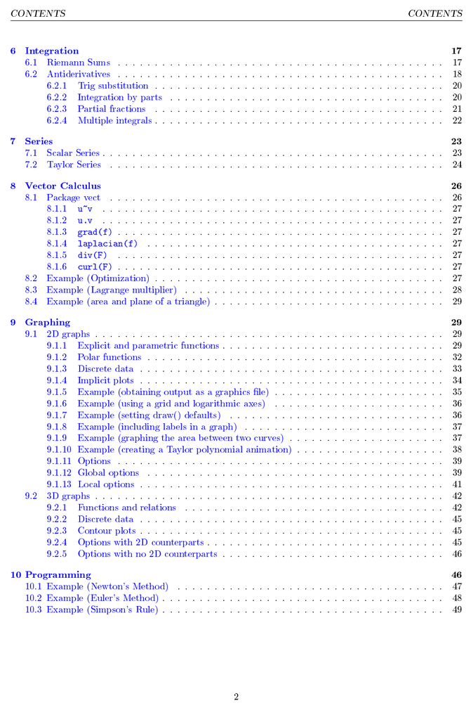

Maxima and the Calculus
Maxima and the Calculus is a 52-page document addressing the use of Maxima for solving typical Calculus problems. Its content is licensed under the Creative Commons Attribution-Share Alike 3.0 United States License
What is Maxima?
Maxima is an open source computer algebra system (CAS). It is free for everyone to download, install, and use! In fact, its (GNU Public) license, or GPL, allows everyone the freedom to modify and distribute it too, as long as its license remains with it unmodified.
What is a CAS?
Any CAS may be thought of as a highly sophisticated calculator. It can be used to do any of the types of numerical calculations you might expect of a calculator such as trigonometric, exponential, logarithmic, and arithemtic computations. However, a CAS' main purpose, and what sets a CAS apart from most calculators, is symbolic manipulation. For example, a CAS can be used to differentiate or integrate $x^{2}\sin x$. It can be used to multiply polynomials and solve equations too! And a CAS will do these things exactly. When asked to divide $36/72$, a CAS will respond with the simplified fraction $1/2$ rather than $0.5$. Similarly, $\sin(2)$, $\pi$, $e$, $\sqrt{7}$ and other irrational numbers are interpreted symbolically as $\sin(2)$, $\pi$, $e$, $\sqrt{7}$, and so on, rather than their decimal approximations. Computer algebra systems are designed to do on a computer what we may be accustomed to doing with pencil and paper!
Table of Contents
